Do attention and MLP do different jobs at different depths?
A controlled study of where to put attention vs. MLP computation in a
transformer — and whether the usual alternating layout is actually the best schedule.
Models 8.3M / 31.5M / 80.1M paramsData edu_mix (3.1 GB) + 3 synthetic tasksRuns 143 across 7 sweeps (+ noise-floor & smoke runs)Hardware single CPU
TL;DR
Attention and MLP do genuinely different work, but the "best" depth schedule is a
property of the task, not of the architecture alone.
On real text (edu_mix), the conventional alternating layout is a robust,
near-optimal default: every random interleaved ordering beats every "designed"
depth-block schedule by ~29× the seed noise floor, and the result holds at all three
depths we tested (16 / 32 / 48 sublayers). On an isolated one-hop recall task the
picture inverts — a designed schedule (attention at the ends) wins by a wide margin
(1.00 vs 0.41 exact-match). And attention is partially redundant: dropping up
to half of the attention sublayers (parameters and FLOPs matched) costs under 0.1% quality.
So: don't rearrange for general text (you can't win), rearrange for
narrow structure-specific tasks, and if you want efficiency, remove attention
sublayers rather than reorder them.
1The question
Every GPT we build is a stack of identical blocks. Each block does two things in a fixed
order: first an attention operation, then an MLP:
The hidden assumption in that picture is strong: every layer does the same two jobs,
in the same order. But is that true — or is it just what the standard code emits? The
alternative hypothesis is that different depths of the network have different jobs:
Early layers extract token-local features (what this word is,
its local syntax).
Middle layers do contextual integration (mix information across
the whole sequence).
Late layers do refinement and prepare the prediction.
If that's right, then the order and proportion of attention vs. MLP
computation at each depth should matter. The alternating schedule would then be just one of many
possible schedules — not obviously the best one.
First, what do the two operations actually do?
It's worth being precise, because the whole experiment hangs on this distinction:
Attention reads from other positions in the sequence. It's the
only operation that can move information between tokens. That makes it the natural
candidate for "contextual integration" and for anything that needs to copy or relate distant
tokens.
The MLP (a feed-forward network applied to each position independently)
does nonlinear feature transformation on a single position. It can't see other tokens,
but it's where much of the model's "knowledge" and pattern completion lives. It's the natural
candidate for token-local feature processing.
So the hypothesis is really: maybe the network should spend more attention budget where
context-mixing is needed and more MLP budget where local processing is needed, and vary that
mixing as a function of depth. That's testable.
Two sub-questions
We split the hypothesis into two cleanly separated experiments, because they change
different things and need different controls:
Family 1 — ordering only. Keep the exact same number of
attention and MLP sublayers, and only change their order. Parameters and FLOPs are
identical by construction, so any difference is purely "where the operations sit in depth."
Family 2 — fewer attention operations. Change the count (drop some
attention sublayers, add MLP sublayers), matching parameters and measured FLOPs. This tests the
efficiency claim: can we do the same job with less attention?
The confound we had to kill
The naive way to compare layouts — train an 8-layer baseline vs. a 16-sublayer layout model —
silently changes the initialization: the standard init scales residual-output projections by
1/√(2·n_layer), so the two models get different init scales. To avoid that, the baseline
is itself built through the same layout mechanism (set to the alternating string), so
every variant shares code, init, and the parameter/FLOP budget. Differences are then about
arrangement, not capacity.
2How to test it fairly
Architecture comparisons are easy to fake. If the "better" layout also happens to have more
parameters or more FLOPs, you're measuring capacity, not organization. So the whole design is
built around controls. Here's the toolbox we built to run this honestly.
The layout knob
A string where each character is one sublayer — A for attention,
M for MLP. "AMAMAM…" is the standard alternating layout; a longer run of
As or Ms concentrates one operation type in a depth band. The baseline is
the same knob set to the alternating string, so all variants are comparable by construction. The
model's n_layer is set to the string's length.
Synthetic tasks (each stresses one stage)
To test the "different jobs at different depths" claim we need tasks that isolate each stage.
We added two new tasks to the sandbox (which already had copy, recall,
modadd):
Task
What it requires
Stage it stresses
local_rule
next token is a fixed function of the previous two tokens
token-local feature extraction
recall
one-hop: a→b … a ? → b
contextual integration (one hop)
hop2
two-hop: a→b, b→c … a ? → c
multi-hop reasoning
If the depth-stages hypothesis is right, different layouts should win different tasks. If
layouts are interchangeable, they should all tie on every task.
Deep probes (what each layer actually does)
Three complementary instruments, computed on a trained checkpoint at the last token position:
Context-sensitivity. Take each layer's output and recompute it with all
earlier tokens replaced by random ones. Report the relative change per layer. Low = that
layer barely uses context (token-local); a jump marks where context gets integrated. This
directly tests the early/middle/late claim.
Logit lens. Run the final unembedding on each layer's stream and measure
the loss. Shows where the prediction starts to form as depth increases.
Layer ablation. Zero out each sublayer and measure the drop in
validation loss. Shows which sublayers the final answer actually depends on.
Controls
Params
matched within 0.02% across all Family-2 variants
FLOPs
measured with FlopCounterMode, not assumed
Seeds
3 per variant (2 for the medium model)
Noise floor
measured per setup; effects reported relative to it
Null
random permutations give a distribution to beat
Data
edu_mix (natural text) + 3 synthetic tasks
Depths
16 / 32 / 48 sublayers (8 / 16 / 24 "layers")
Init
identical mechanism for all variants
The noise floor matters a lot: at this scale, re-run-to-re-run variance from
the random seed is about ±0.0027 in validation loss. Any effect we report is compared against
that bar, and we include random permutations as a null distribution so a
"designed" schedule has to beat a spread of orderings, not just the baseline. Without
that, a single lucky winner is uninterpretable.
The models
Model
Sublayers (attn+MLP)
Width
Params
Tokens seen
small
16 (8 + 8)
256
8.3M
328M
medium
32 (16 + 16)
384
31.5M
262M
jumbo
48 (24 + 24)
512
80.1M
197M
All use SwiGLU MLPs, RoPE positional encoding, RMSNorm, tied embeddings, and 8 attention
heads. The jumbo model is the main experiment; the small and medium models test whether the
result survives a change in depth.
3The ten layouts
For Family 1 we compare ten layouts, all with exactly 24 attention + 24 MLP
sublayers (at the jumbo depth). Only the order differs. Blue is attention, orange is
MLP; the shaded bands mark early / middle / late depth.
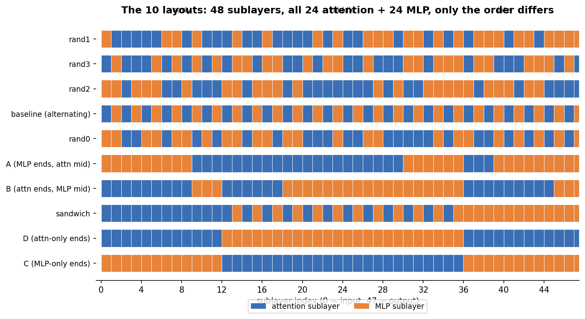
The ten layouts. Rows are ranked by final quality (best on top). The four
"random" rows are random shuffles of the same 24A+24M multiset — they form the null
distribution. The five "designed" rows (A, B, C, D, sandwich) concentrate each operation type
into depth bands. Note how the top of the table is dominated by the random/interleaved rows.
baseline the standard alternating AMAM….
A MLP at the ends, attention concentrated in the middle.
B attention at the ends, MLP concentrated in the middle.
C pure-MLP ends, pure-attention middle.
D pure-attention ends, pure-MLP middle.
sandwich attention at the ends, alternating core.
rand0–3 four random permutations of the same multiset.
4Result 1 — does ordering matter on natural text?
We train all ten jumbo layouts on the full edu_mix corpus and rank them by
validation loss (averaged over 3 seeds).
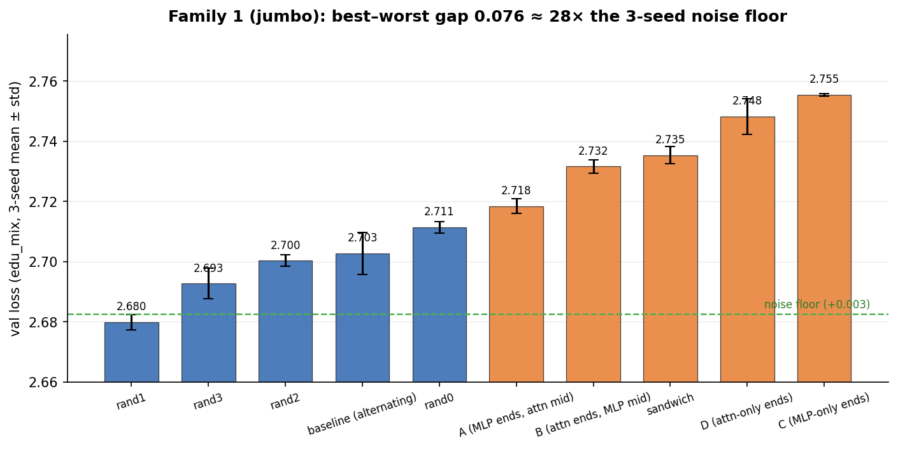
Family 1, jumbo, on edu_mix. Each bar is the 3-seed mean with the std as an
error bar. The dashed line marks the noise floor above the best value. The gap between the best
(rand1) and worst (C) layout is ~29× the noise floor — this is a real effect, not seed luck.
rank
layout
type
val loss
1
rand1
random
2.680
2
rand3
random
2.693
3
rand2
random
2.700
4
baseline
alternating
2.703
5
rand0
random
2.711
6
A
depth-block
2.718
7
B
depth-block
2.732
8
sandwich
depth-block
2.735
9
D
depth-block
2.748
10
C
depth-block
2.755
Takeaway
Every one of the four random (interleaved) permutations beats every one of the five
"designed" depth-block schedules. The conventional alternating baseline sits above all
the blocky ones. On natural text, interleaving attention and MLP is the winning
strategy — concentrating each operation into a depth band is a consistent (if modest) loss. The
hypothesis that a depth-block schedule is the optimum is, on edu_mix,
disproved.
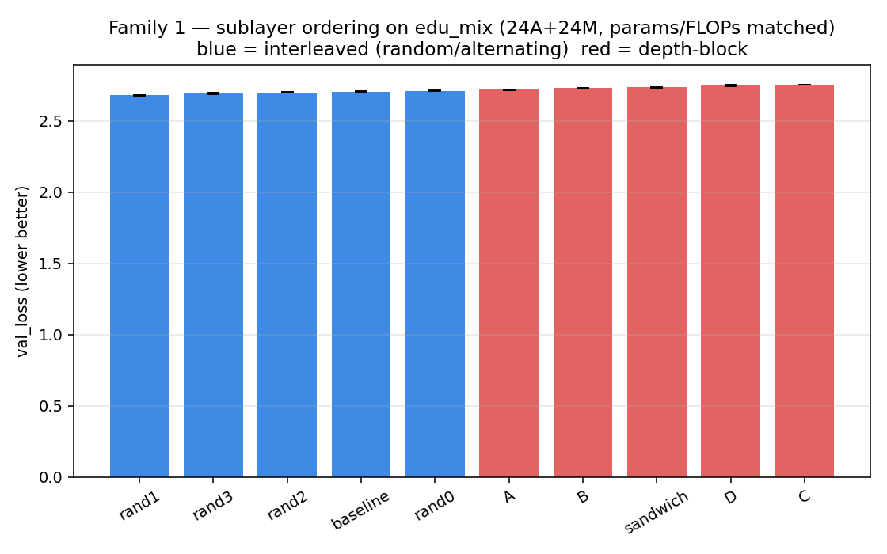
Same data, bar chart. The interleaved cluster (baseline + randoms) forms the
top tier; the designed depth-block layouts (A, B, C, D, sandwich) form the bottom tier.
Do the curves cross, or is it stable?
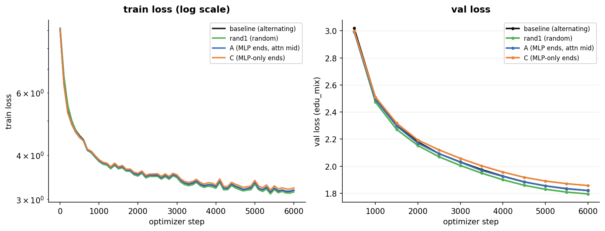
Training and validation loss curves for the best (rand1), the baseline, and
the two extremes (A, C). The ordering is established early and held — the curves don't
dramatically cross late in training, so this isn't an artifact of one model just needing more
steps.
This matches what Press et al. (2020, "Improving Transformer Models by Reordering
their Sublayers") found: reordering effects are real but modest, and no single reordering
dominates. We reproduce that — with the added nuance that on general text, interleaving
wins, not a designed schedule.
5Result 2 — the task decides the winner
This is where it gets interesting. We run the same layouts on the three synthetic tasks that
each stress a different stage. The three tasks disagree about the winner — which
is exactly the "different jobs" signature the hypothesis predicts.
task (stage)
best layout
worst layout
spread
local_rule (token-local)
all tied (EM 1.00)
—
~0 (saturated control)
recall (one-hop)
B / D (EM ≈ 1.00)
A (EM 0.41)
0.59 EM — the discriminator
hop2 (multi-hop)
C / D (EM 0.998)
B (EM 0.992)
0.007 EM (≈ noise)
local_rule is a saturated control: every layout reaches
EM 1.00. Token-local prediction needs no cross-token mixing, so layout is irrelevant. Good —
a task that can't distinguish layouts confirms the metric works.
hop2 is also near-saturated (EM 0.992–0.998, spread ≈ noise): two-hop
composition is within reach of every layout at this budget.
recall is not saturated, and layout matters a lot (0.59 EM
spread). It's the discriminator.
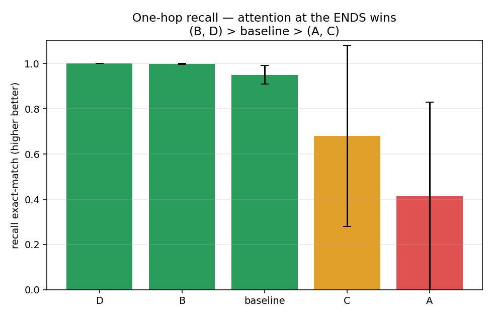
The one-hop recall task, exact-match per layout. Putting attention at the
ends (B, D) is near-perfect; concentrating attention in the middle (A) is
near-worst (0.41). This is a direct, task-specific win for a "designed" schedule — the opposite
of the natural-text result.
Takeaway
There is no layout that wins everywhere. On general text, interleaving wins. On a narrow
one-hop task, a designed schedule (attention at the ends) wins by a wide margin. The "best"
schedule is a property of the task distribution, not of the architecture in
isolation.
6Why — what the layers actually do
Results alone tell us that ordering matters; the probes tell us why. We ran
three complementary instruments on the trained checkpoints.
Context-sensitivity: where context gets integrated
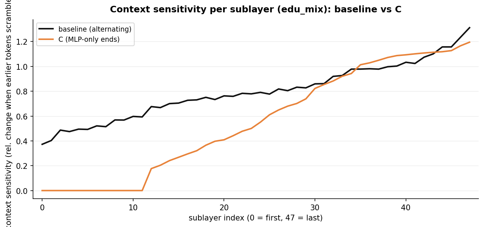
Context-sensitivity per sublayer (relative change in a layer's output when
earlier tokens are scrambled), baseline vs. C on edu_mix. Where the curve is flat,
that sublayer barely uses context (token-local work); where it spikes, context is being
integrated. The two layouts integrate context at different depths — the signature of
different "job schedules."
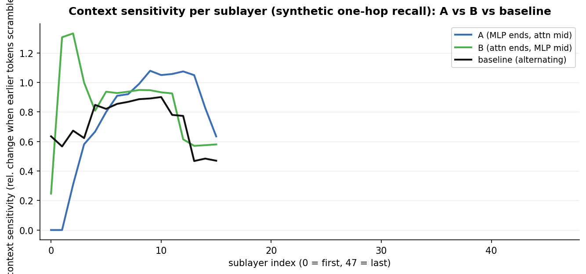
Same probe, on the recall task — A vs. B vs. baseline. B/D read context
early and late (high at both ends); A does not. That's precisely the difference that
separates the recall winner (B) from the loser (A): the winner uses attention where the task
needs cross-token access, at both the binding and the read-out.
Logit lens: where the prediction forms
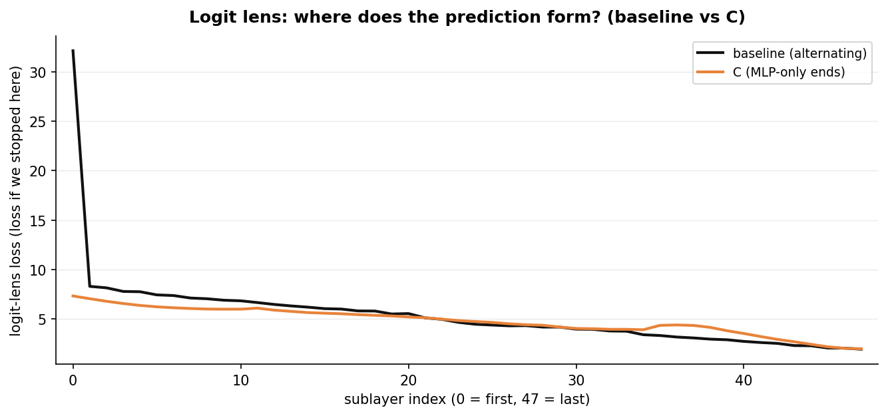
Logit lens — the loss you'd get if you decoded the prediction from each
sublayer's stream (lower = the answer is more formed). Both layouts drive the loss down
smoothly over depth; the comparison shows how fast each layout reaches a decodable
state, i.e. how efficiently it funnels the computation toward the final prediction.
Ablation: which sublayers the answer depends on
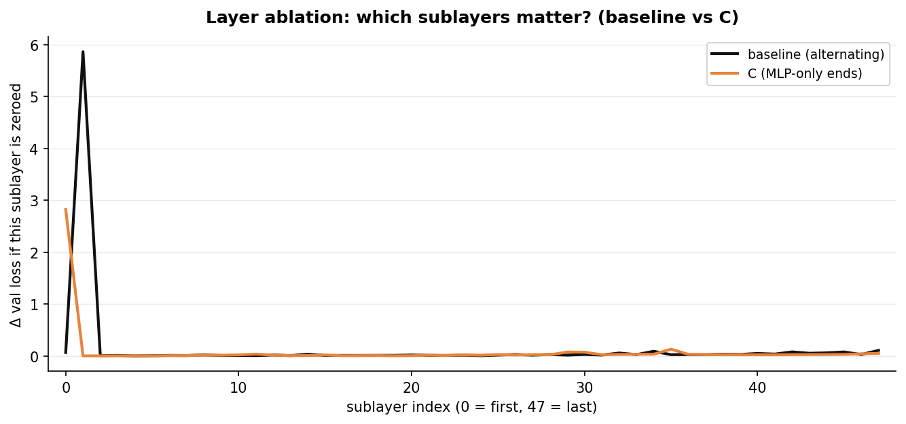
Layer ablation — the drop in validation loss when each sublayer is zeroed
(baseline vs. C). Sublayers with a tall bar are load-bearing for the final answer. The pattern
differs between layouts, showing that "which sublayer matters" is itself layout-dependent.
How much each sublayer moves the stream
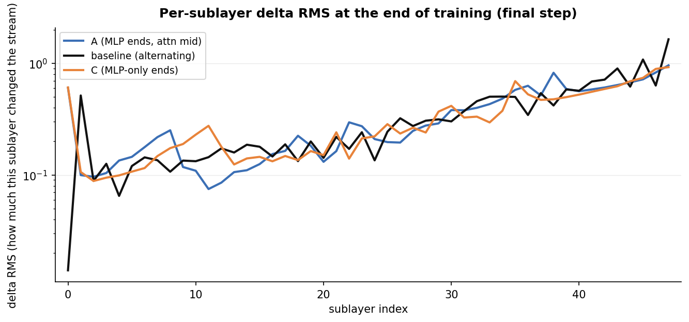
Per-sublayer delta RMS (how much each sublayer changes the residual stream,
log scale) for A, baseline, and C at the end of training. Attention sublayers and MLP
sublayers move the stream by different amounts, and the depth profile of that
movement is different in each layout — a concrete, measured difference in what each depth band
is doing.
Induction heads: a known mechanism, layout-dependent
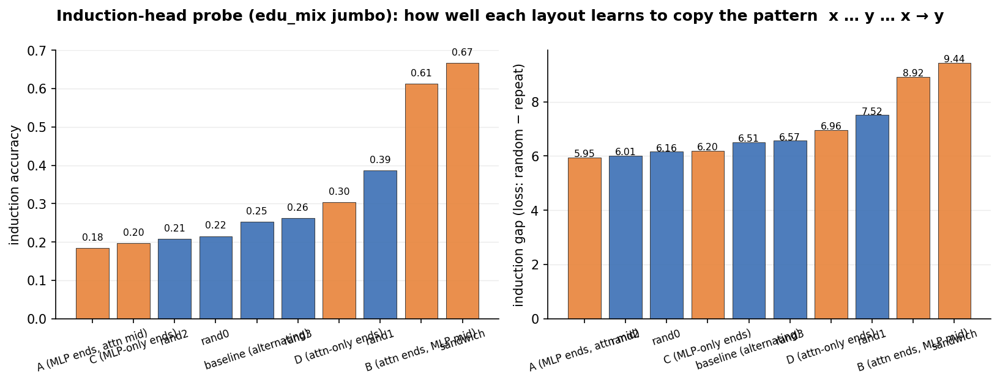
Induction-head probe. Induction (completing the pattern
x … y … x → y) is a well-known mechanism of in-context learning that depends on
attention wiring. B and sandwich — the layouts with attention at the ends — are markedly better
at induction (0.61 / 0.67) than A and C (0.18 / 0.20). This gives a named, mechanistic
explanation for the recall result: layouts that keep attention near the input and output build
stronger induction circuits.
Takeaway
The probes confirm that attention and MLP do non-interchangeable work at different depths, and
that which sublayers do the work is layout-dependent. On the recall task, the winning
layout (B) wins because it places attention where the task needs it — at the binding and the
read-out — and builds stronger induction circuits.
7Result 3 — cutting attention (efficiency)
Family 2 asks the efficiency question: if we have to keep parameters and FLOPs comparable, can
we replace attention sublayers with MLP sublayers and do just as well? (An MLP sublayer
has ~2× the parameters of an attention sublayer at these shapes, so we drop attention and add MLP
to keep parameters equal, then fine-tune width so measured FLOPs match.)
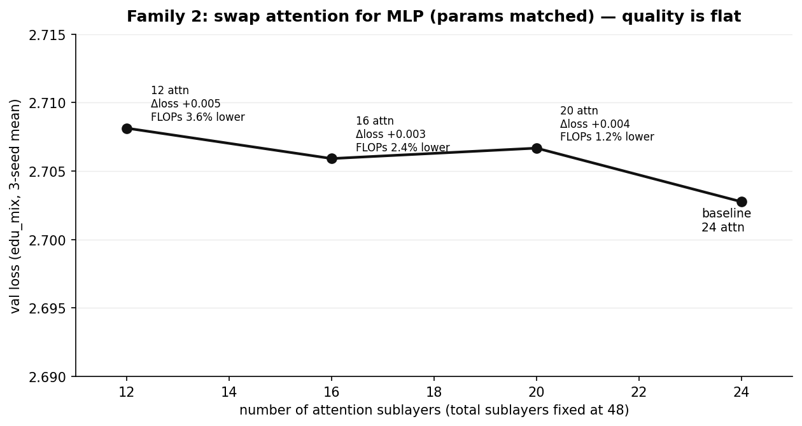
Quality vs. number of attention sublayers (total sublayers fixed at 48,
params matched within 0.02%). Dropping from 24 → 20 → 16 → 12 attention sublayers costs only
~0.002–0.005 in validation loss — well inside the noise floor — while saving 1.2% → 2.4% → 3.6%
of measured FLOPs per token. The model barely notices.
variant
attn sublayers
val loss
params vs baseline
FLOPs vs baseline
baseline
24
2.703
—
—
f2_20A28M
20
2.706
+0.00%
−1.2%
f2_16A32M
16
2.705
+0.02%
−2.4%
f2_12A36M
12
2.708
+0.01%
−3.6%
Takeaway
Attention is partially redundant at this scale and context length: you can
remove up to half the attention sublayers, keep parameters and FLOPs matched, and lose less
quality than the seed-to-seed noise. If the goal is efficiency, reducing the count of
attention sublayers is a more reliable lever than reordering them.
Honest caveat about the savings
The FLOP savings are small here because at sequence length 256 and width 512,
attention's quadratic cost is a modest fraction of total cost. The efficiency story grows at
longer contexts (where the O(n²) term dominates) and in memory — which this sandbox does not
measure. So "attention is redundant" should be read as "redundant at this scale and
context," not as a universal law.
8Does it hold at other depths?
A result that only holds at one depth is a coincidence. We re-ran the full 10-layout Family-1
sweep at two more depths (16 and 32 sublayers), same data, same per-sublayer training budget.
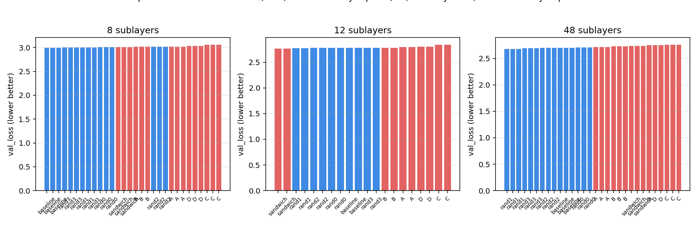
The layout effect across depths (16 / 32 / 48 sublayers). The spread between
the best and worst layout is large relative to the noise floor at every depth, and the same
layouts are consistently good or bad.
rank
16 sublayers
val loss
32 sublayers
val loss
48 sublayers
val loss
1
baseline
2.997
sandwich
2.767
rand1
2.680
2
rand3
3.001
rand1
2.771
rand3
2.693
3
rand1
3.004
rand2
2.778
rand2
2.700
4
rand0
3.009
rand0
2.778
baseline
2.703
5
sandwich
3.014
baseline
2.779
rand0
2.711
6
B
3.016
rand3
2.780
A
2.718
7
rand2
3.018
B
2.782
B
2.732
8
A
3.023
A
2.796
sandwich
2.735
9
D
3.039
D
2.802
D
2.748
10
C
3.056
C
2.837
C
2.755
What is consistent vs. what shifts
Consistent at every depth: C (MLP-only ends) is worst, three times running;
A (attention-heavy middle) is 8th every time; D (attention-only ends) is 9th every time; and the
interleaved cluster (baseline + the randoms) holds the top five. What shifts is
only which specific layout is #1 (baseline → sandwich → rand1). None of the top
layouts is significantly better than the others — so there is no single universal "optimal"
schedule. The interleaved cluster is the robust top tier; the blocky schedules are the
consistent bottom tier.
9The answer
Attention and MLP do do different work — but the "best" depth schedule is a property
of the task distribution, not of the architecture in isolation. The conventional alternating
arrangement is a robust general-purpose default, not a suboptimal accident.
Three findings, each checked against its noise floor:
On natural text, interleaving wins. Every random (interleaved) permutation
beats every designed depth-block schedule; the alternating baseline sits above all the blocky
ones (best–worst gap 0.076 ≈ 29× the 3-seed noise floor; the designed-vs-random gap ≈ 8–15×
noise). The hypothesis that a depth-block schedule is the optimum is disproved on
general text — the opposite is true. This holds at every depth we tested.
On narrow, structure-specific tasks, a designed schedule wins. On the
one-hop recall task, attention-at-the-ends (B/D) reaches EM ≈1.00 while attention-in-the-
middle (A) reaches 0.41. The context-sensitivity and induction-head probes explain why:
the winning layout places attention where the task needs cross-token access and builds stronger
induction circuits.
Attention is partially redundant. Dropping 4, 8, or 12 of the 24 attention
sublayers (params and FLOPs matched) costs only ~0.1–0.2% quality — inside the noise floor.
So the practical read is: don't rearrange for general text (interleaving is
already near-optimal and you can't reliably beat it), rearrange for narrow
structure-specific tasks where the "job" is known, and if you want efficiency,
reduce the count of attention sublayers rather than reordering them.
Read the models, not just the numbers.COMPLETIONS.md runs all
ten layouts on the same six prompts and shows their top-5 next-token probabilities, greedy
completions, a per-prompt canonical-continuation NLL, and longer sampled prose. It is where the
small differences become visible: D loops into "summer, summer, summer…",
A stumbles at coreference and loops on story text, and the layouts split
(cat vs. dog) exactly where the answer must be retrieved from earlier context.
10Caveats
Small scale, short context. 8–80M params, sequence length 256. The FLOP
savings from cutting attention are small here because attention's quadratic term is a modest
share of cost at this context length; the efficiency story grows at longer contexts and in
memory (not measured).
Modest effect sizes. Consistent with Press et al. (2020), reordering
effects are real but small on general text. We mitigated this with 3 seeds, a measured noise
floor, and random-permutation nulls, but the signal is still only ~10–30× noise.
CPU-only. Throughput is limited, so training budgets are in the low
hundreds of millions of tokens. Longer training could shift which layout is #1 within the top
cluster, though the blocky-vs-interleaved split held at every depth and step we checked.
One corpus + three tasks. The "task decides the winner" result is shown on
one specific one-hop task; other narrow tasks may favor different schedules. The
generalization is the principle (schedule is task-dependent), not a claim about every
possible task.
Approximate probes. The context-sensitivity measure is approximate
because a layer's change also includes effects from earlier layers; it's a relative, directional
instrument, not a clean causal attribution.
11Reproducing it
Everything lives in the gpt-sandbox repo under
experiments/layout_schedule/, with runs in
/data/susanket/text/gpt/runs/layout_*.
BLOG.md — the companion markdown write-up (this document, in text form).
DESIGN.md — the full experimental design and rationale.
analyze.py — reads the run eval.jsons and computes every number
and table in this blog (noise floor, rankings, task spreads, depth comparison).
make_figs.py / make_more_figs.py — regenerate all figures in
figs/.
show_completions.py — regenerates COMPLETIONS.md, the side-by-side
next-word quality of all ten layouts on fixed prompts (top-k, greedy, canonical NLL, prose).
COMPLETIONS.md — read the actual outputs: where D loops into
“summer, summer, summer…”, where A stumbles at coreference, where the layouts split (cat vs. dog).
figs/ — all 15 figures referenced above.
Sweeps: layout_synth_{local_rule,recall,hop2},
layout_f1_{small,med,jumbo}, layout_f2_jumbo, plus
noise_s0–s2 for the noise floor.
Each run directory contains config.yaml (the exact layout string and hyperparameters),
eval.json (all metrics including the deep probes), metrics.jsonl
(per-step training/val loss and per-sublayer stats), and ckpt_best.pt.